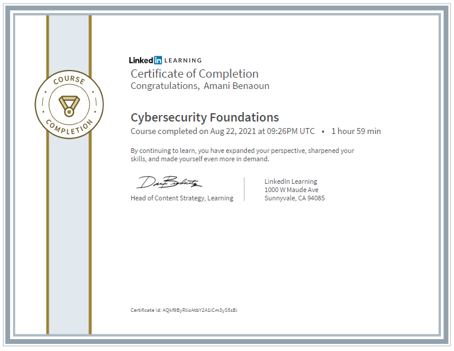
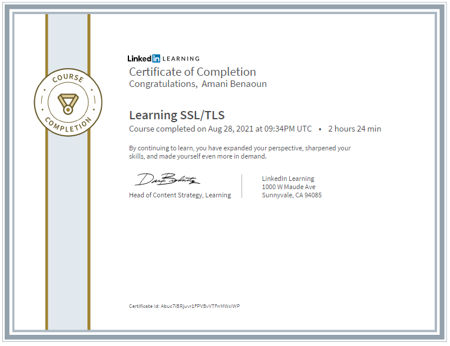
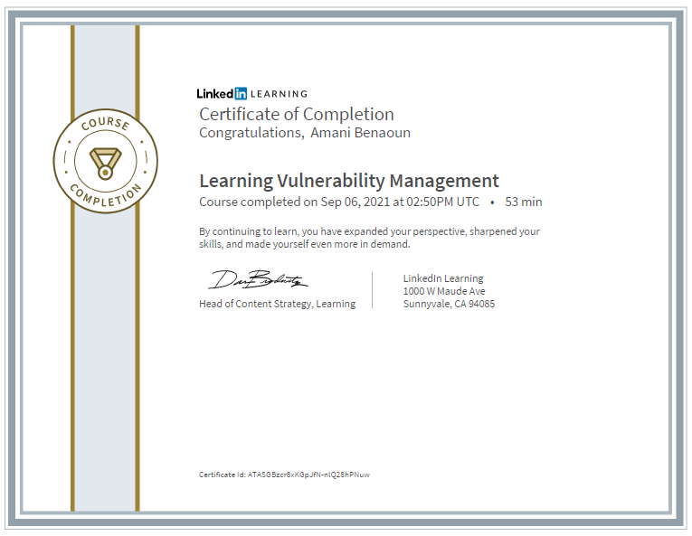
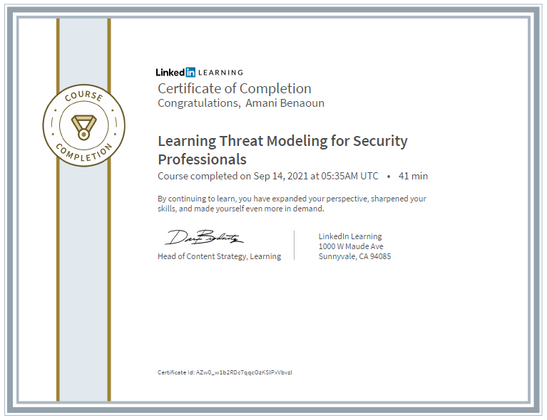
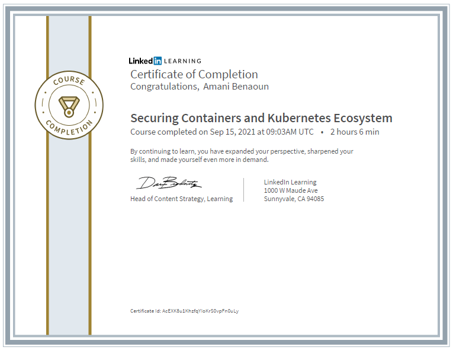

Become an IT Security Specialist Learning Path
- Differentiate between risks, threats, and vulnerabilities.
- Identify ways to minimize the various attack surfaces.
- Recognize the different types of malware.
- Discuss methods to ensure safe browsing habits.
- Summarize the various ways to secure your Wi-Fi connection.
- Outline common cryptographic techniques used to secure digital data.
- Explain the importance of NIST, COBIT, and other frameworks.
- Dissect cyber risk.
- Apply security measures.
- Recognize the different types of cybercrime.
- Measure incident management maturity.
- Detect and respond to attacks.

- Recall the purpose of multifactor authentication.
- Identify the tool used in today’s Windows operating systems to secure the file system.
- Name the authentication protocol used in Active Directory.
- Recognize the location of the audit logs.
- Summarize the purpose of hardening.
- Explain the purpose of cryptographic techniques.
- Examine methods for ensuring physical security.
- Examine the three levels for software-restriction policies.
- Explore how VLANS can protect the network.
- Identify the different ways malicious actors can spoof protocols on the network.
- List common devices that are used to protect and defend a network.
- Recognize how antivirus software protects your system against malware.
- Recognize how server and domain isolation can isolate and protect subnetworks.
- Recognize the threat of password attacks.
- Symmetric and asymmetric encrypting
- How certificates are issued and managed
- Configuring a Linux OpenSSL PKI environment
- Acquiring a web server certificate
- Acquiring a code-signing certificate
- Configuring a website with a certificate
- Configuring a TLS VPN

- Identify characteristics of each type of cloud service.
- Explain the different features of Microsoft Azure.
- Explain the different features of Amazon Web Services (AWS).
- Apply security controls to cloud-based applications.
- Identify the different types of cloud security controls.
- Goals of computer forensics
- Using a hex editor
- Acquiring data
- Ensuring data integrity with hashing
- Indexing and searching
- Generating a report
- Main sources for vulnerability data
- Prioritizing vulnerabilities
- The industry standard for vulnerability risk scoring
- Vetting false positives
- Confirming remediation
- Building a vulnerability management program

- Threat Modeling
- Network Security
- Threat & Vulnerability Management

- Foundational disciplines of artificial intelligence
- Identifying security activities at different stages
- How AI can help you tackle problems of scale
- Using AI to avoid false positives
- How AI can address issues before they become threats
- Using clustering methods with security problems
- Preparing your organization for AI
- Defining containers
- Attack surface and vectors
- Five security factors
- Securing containerized app code
- Securing images
- Securing hosts and the container working environment
- Securing apps in Kubernetes
- Securing Kubernetes clusters

- Communication
- Information Security